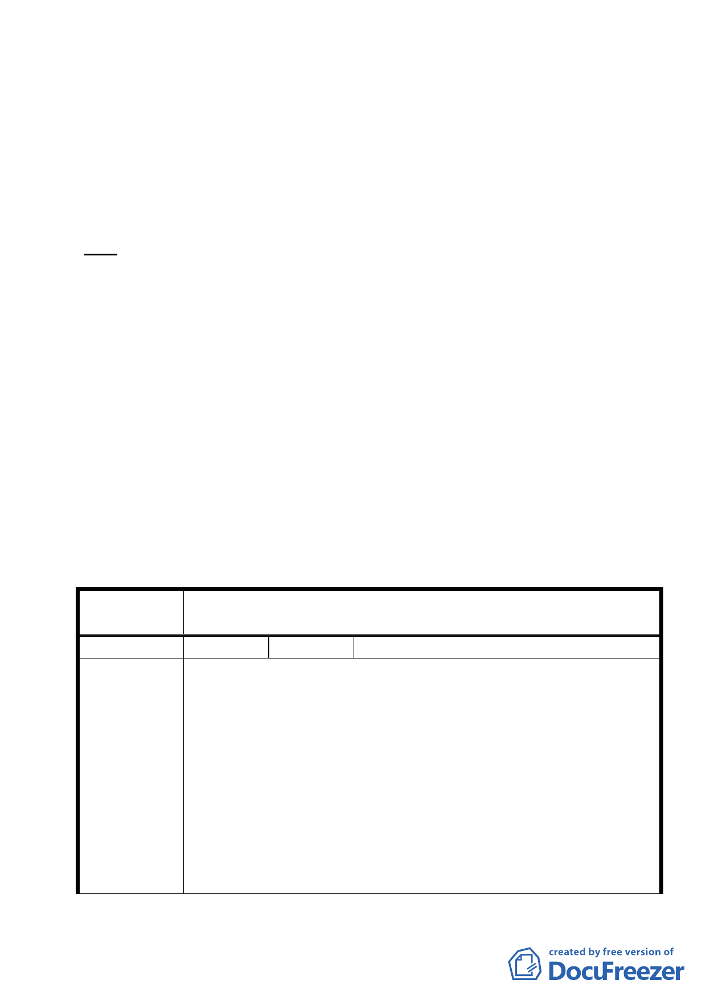

宅區（二）」，配合放寬建蔽率規定，另調降加油站用地法
定容積率上限。
（二）訂定都市設計管制要點。
（三）訂定容積移轉規定。
七、公民或團體所提意見：18 件。
決議：
一、本案除市府本次會議所送修正計畫書第 2-20 頁（四）文字修
正為「建築基地地面高度設計：建築基地地面設計以維持原
地形地面為原則，但經整地後基地地面高度不得超過 1.2 公
尺」外，其餘依市府本次會議所送修正計畫書內容通過。
二、文化資產保存能否成功，需要所有權人的支持與配合，本案
請臺灣銀行本於國營事業對於社會公益的責任，針對山仔后
地區的資產處理，能主動配合文化資產保存目標，共同為保
存珍貴美軍宿舍建築群而努力。
三、公民或團體陳情意見審決如後附綜理表。
臺北市都市計畫委員會 公民或團體所提意見綜理表
案名
編號
陳情理由
變更臺北市士林區陽明山山仔后地區第二種住宅區為特定住宅區
細部計畫案
1 陳情人 黃淑芬
1.本人位於士林區華岡段二小段 634 地號與同段同小段 592 地號
公有土地合併使用證明申請乙案，經市府發展局函覆該公有地
華岡段二小段 592 地號屬「台北市士林區陽明山山仔后地區禁
建範圍」（北市府 95 年 12 月 13 日府都規字第 09506405600 號
公告實施），故所請未准。
2.本案現為地上 2 層老舊房舍，水電管線均不堪使用，在考量結
構安全及居住品質前提下欲拆除重建，然因 貴局所核發之建築
線指示圖（北市府 095 字第 2305 號）規定，本案需取得該筆公
有土地合併證明書，向國有財產局購買後，方可申請建築。
3.經本人實際了解市府公告實施「為變更臺北市士林區陽明山山
仔后地區都市計畫辦理禁建案」對山仔后地區未來整體規畫構
14